부스에서 어떻게 뽑히는지, 관리 화면에서 무엇을 누르시면 되는지
화면 그대로 담았습니다. 처음부터 끝까지 한 번만 읽어 주세요.
3장은 방문자와 스태프가 부스에서 보게 될 화면입니다. 미리 한 번 보셔야 현장에서 “이게 맞나요?” 하는 질문에 답하실 수 있습니다.
5장부터 10장이 주최자님이 실제로 손대시는 부분입니다. 시간이 없으시면 5장(수량), 6장(저장), 10장(배송 정보) 세 곳만 읽어 주세요.
럭키드로우는 방문자가 자기 휴대폰으로 뽑는 방식이 아닙니다. 부스에 세워 둔 태블릿에서 스태프가 방문자 앞에서 눌러 뽑습니다.
주소가 밖으로 알려져도 남이 재고를 태울 수 없어야 하기 때문입니다. 그래서 로그인이 되어 있지 않은 기기에서는 뽑기 버튼이 아예 눌리지 않습니다. 버튼 아래에 “스태프가 로그인해야 뽑을 수 있어요” 라고 떠 있으면 그 기기는 로그인이 안 된 상태입니다.
| 추첨 화면 |
부스 기기에서 여는 화면입니다. 여기서 뽑습니다. 이벤트 주소를 그대로 열면 나옵니다. |
|---|---|
| 관리 화면 |
주최자님이 상품·수량·운영을 정하는 화면입니다. 이벤트 주소 뒤에 /admin 을 붙이면 나옵니다. 추첨 화면 맨 아래 흐릿한 글씨로도 들어가실 수 있습니다. |
다른 이벤트(포토카드·스탬프)에는 스태프 전용 화면이 따로 있지만, 럭키드로우는 추첨 화면 자체가 곧 스태프 화면입니다. 부스 기기에는 추첨 화면 하나만 띄워 두시면 됩니다.
개수를 정하고 한 번 누르면 그만큼 한꺼번에 뽑힙니다. 구매 금액에 따라 3개·5개·10개를 드리는 운영이라면 그대로 쓰시면 됩니다. 한 번에 최대 100개까지 됩니다.
태블릿을 두 대 쓰시든 세 대 쓰시든 재고는 하나입니다. 한 기기에서 뽑으면 다른 기기의 남은 수량도 가만히 두어도 따라서 줄어듭니다. 관리 화면에서 마감을 켜시면 부스 기기들도 바로 마감 화면으로 바뀝니다.
당일 아침에 처음 만지시면 반드시 무언가 빠집니다. 전날 밤에 아래까지만 해 두시면 당일에는 스위치 두 개만 만지시면 됩니다.
관리 화면 왼쪽 ‘스태프 계정’ 에서 계정을 따로 만드실 수 있습니다. 한 계정을 돌려 쓰시면 누가 뽑았는지 기록이 섞입니다.
마지막 줄까지 해 두시면, 당일 아침 전까지 스태프가 실수로 수량을 건드리거나 미리 뽑아 버릴 일이 없습니다.
처음 받으신 비밀번호는 저희도 아는 값입니다. 관리 화면 왼쪽 ‘내 계정’ 에서 주최자님만 아는 값으로 바꿔 주세요.
아래는 부스 기기(아이패드 가로)에서 보이는 화면 그대로입니다. 방문자가 옆에서 같이 보는 화면이라 미리 알고 계시는 편이 좋습니다.
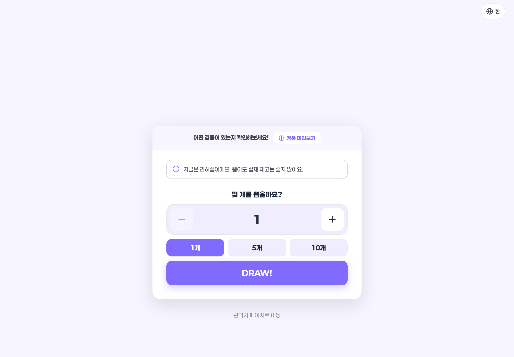
1 2 3 4남은 수량이 적어지면 이 자리에 “남은 경품 N개, 서둘러요!” 가 대신 뜹니다.
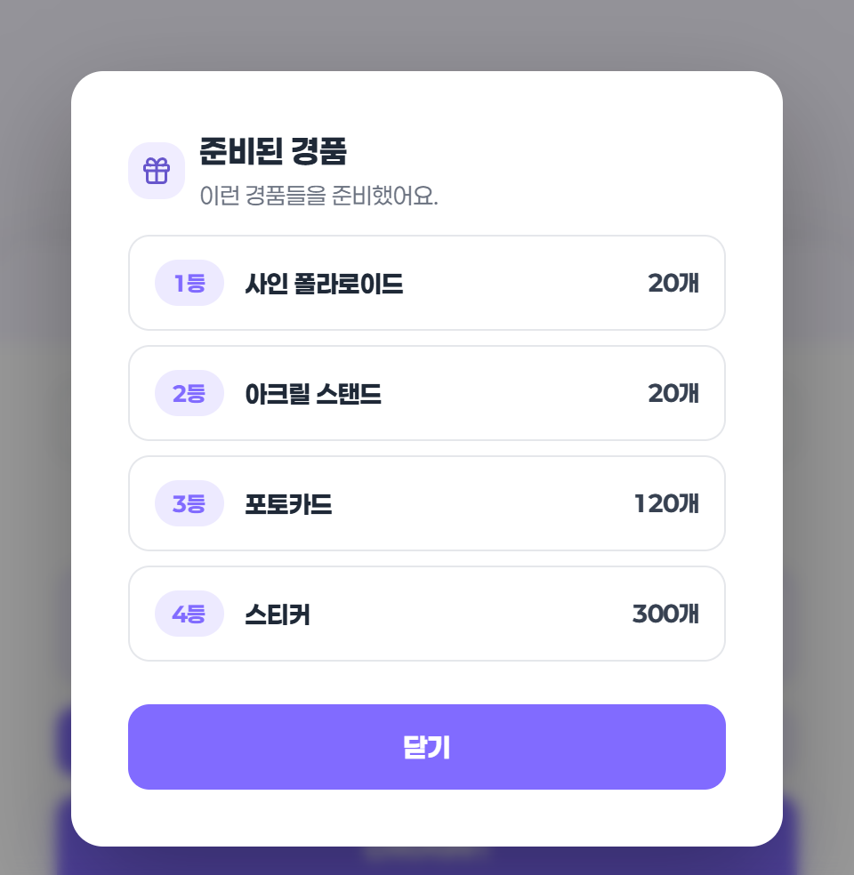
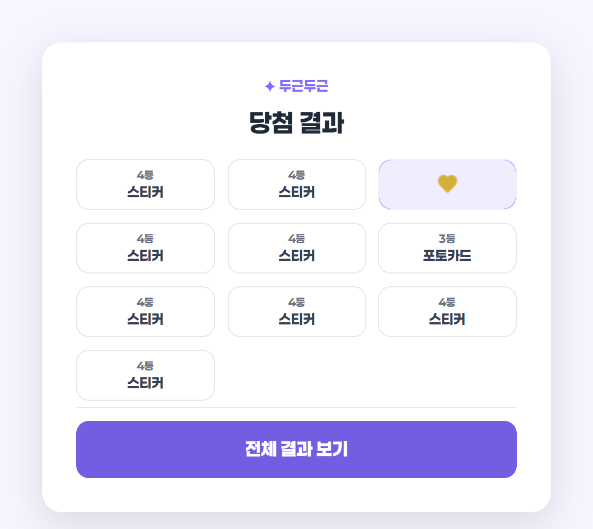
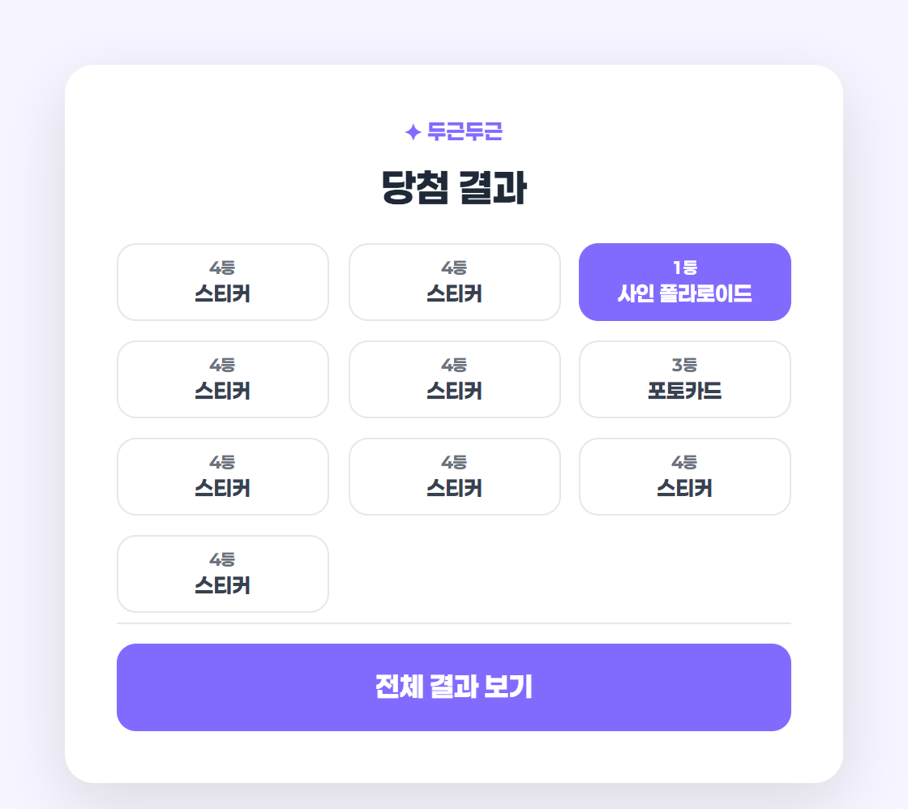
낮은 등수는 순서대로 스르륵 나타나고, 비싼 등수만 덮여 있어 방문자가 직접 긁습니다. 어느 등수를 덮을지는 저희가 미리 정해 두었습니다. 10개를 한 번에 뽑아도 긁는 칸은 비싼 등수뿐이라 줄이 밀리지 않습니다.
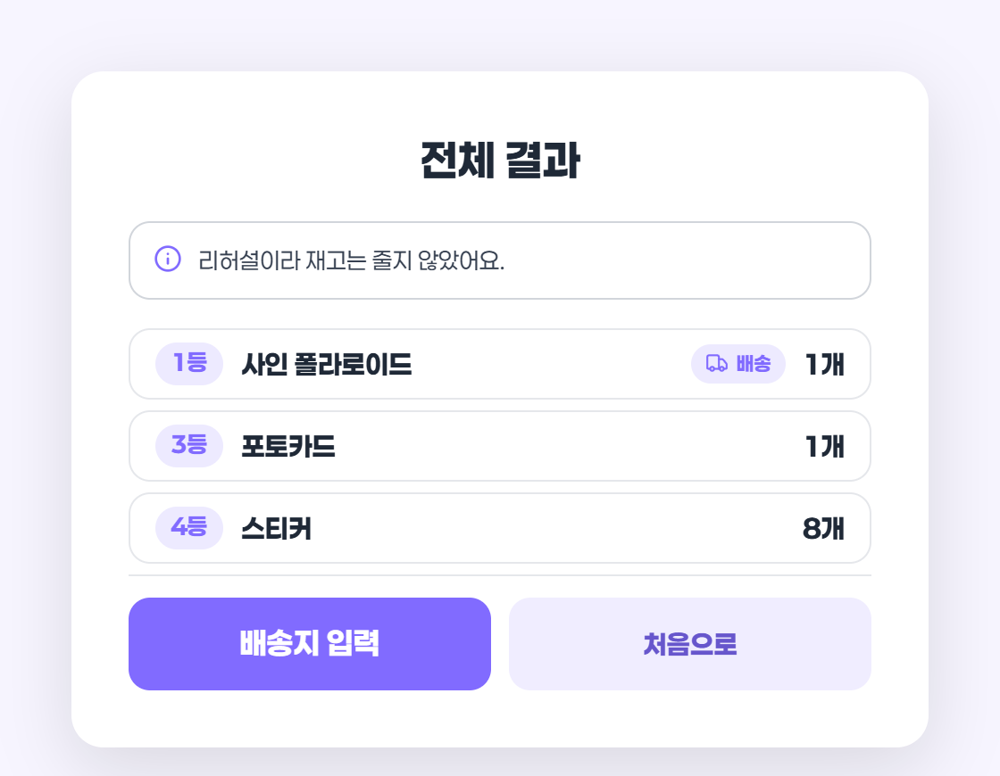
방문자 화면을 ‘등수만’ 으로 해 두셔도 이 화면에는 상품명이 나옵니다. 연출이 아니라 스태프가 물건을 건네기 위한 목록이기 때문입니다.
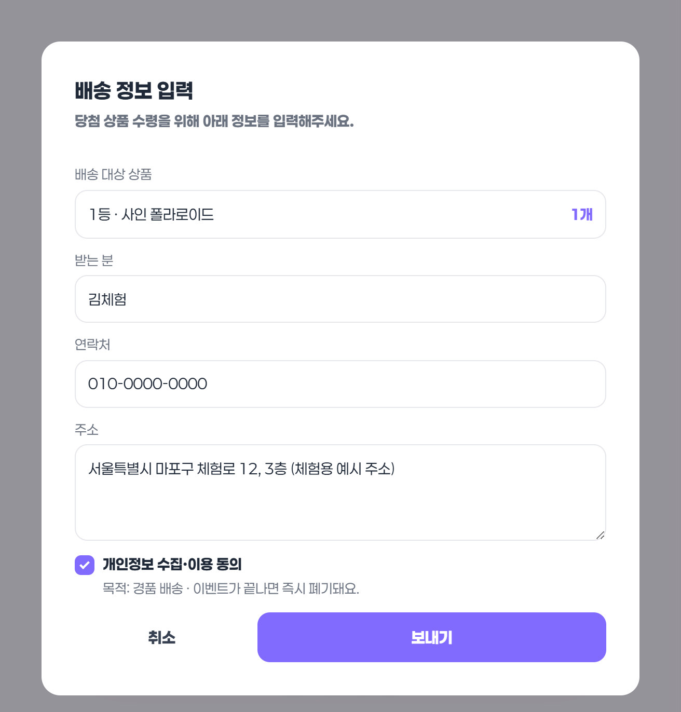
한 번 낸 내용은 방문자 본인도 다시 볼 수 없습니다. 잘못 적으셨다는 분이 계시면 스태프에게 말씀해 달라고 안내해 주세요 — 주최자님이 관리 화면에서 확인하실 수 있습니다.
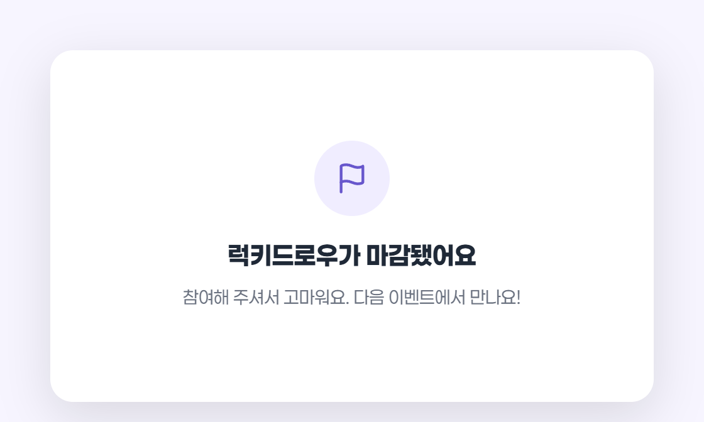
다시 열면 방문자가 이어서 뽑을 수 있습니다. 지워지는 것은 없습니다. 그래서 전날 밤에는 마감을 켜 두시고, 당일 아침에 끄시는 운영을 권합니다 — 준비 중에 누가 눌러 재고가 나가는 일이 없습니다.
마감은 방문자 쪽만 닫습니다. 주최자님은 계속 들어와 수량을 고치고 배송 정보를 확인하실 수 있습니다.
이벤트 주소 뒤에 /admin 을 붙여 로그인하시면 아래 화면이 나옵니다. 처음 열리는 곳은 대시보드입니다 — 보는 화면이지 고치는 화면이 아닙니다.
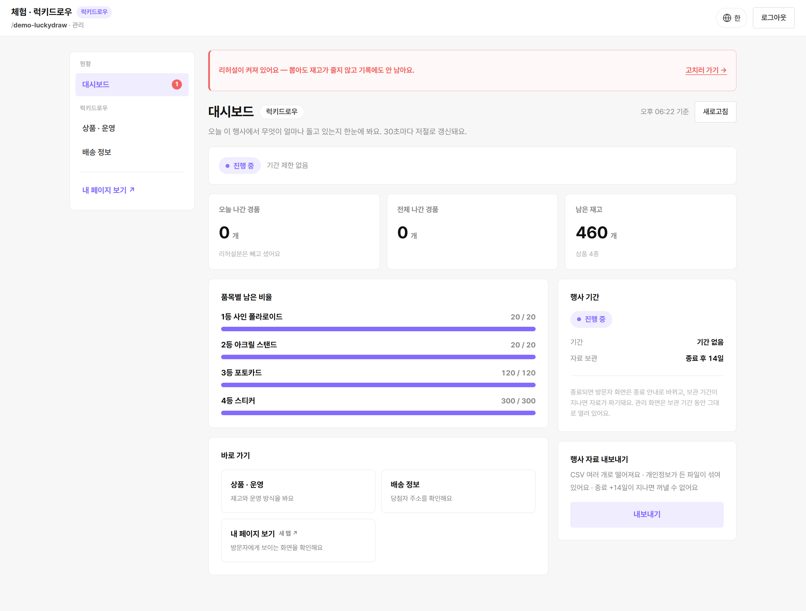
| 대시보드 | 오늘·전체 나간 경품, 남은 재고, 품목별 남은 비율. |
|---|---|
| 상품 · 운영 | 주최자님이 제일 자주 여실 화면입니다. 상품·수량과 운영 설정이 함께 있습니다. (5~9장) |
| 배송 정보 | 배송 상품에 당첨된 방문자가 남긴 주소입니다. (10장) |
| 내 계정 | 비밀번호를 바꾸는 곳입니다. |
| 스태프 계정 | 부스 기기에서 쓸 스태프 계정을 만듭니다. |
위 캡처는 로그인 없이 열리는 체험용 화면이라 ‘내 계정’ · ‘스태프 계정’ 이 보이지 않습니다. 실제 이벤트 화면에서는 왼쪽 아래 ‘계정’ 묶음에 함께 나옵니다.
“리허설이 켜져 있어요 — 뽑아도 재고가 줄지 않고 기록에도 안 남아요.”
행사 중에 이 줄이 보이면 지금 판매분이 하나도 집계되지 않고 있습니다.
오른쪽 ‘고치러 가기 →’ 를 누르시면 바로 그 자리로 갑니다.
왼쪽 메뉴 ‘상품 · 운영’ 을 여시면 맨 위에 오늘 현황이 나옵니다.
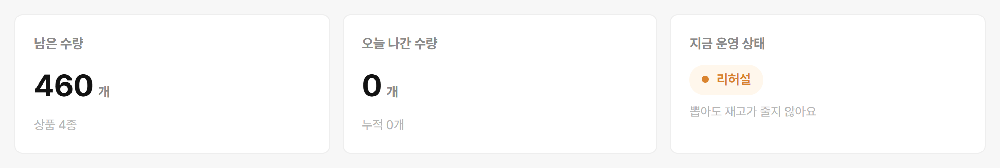
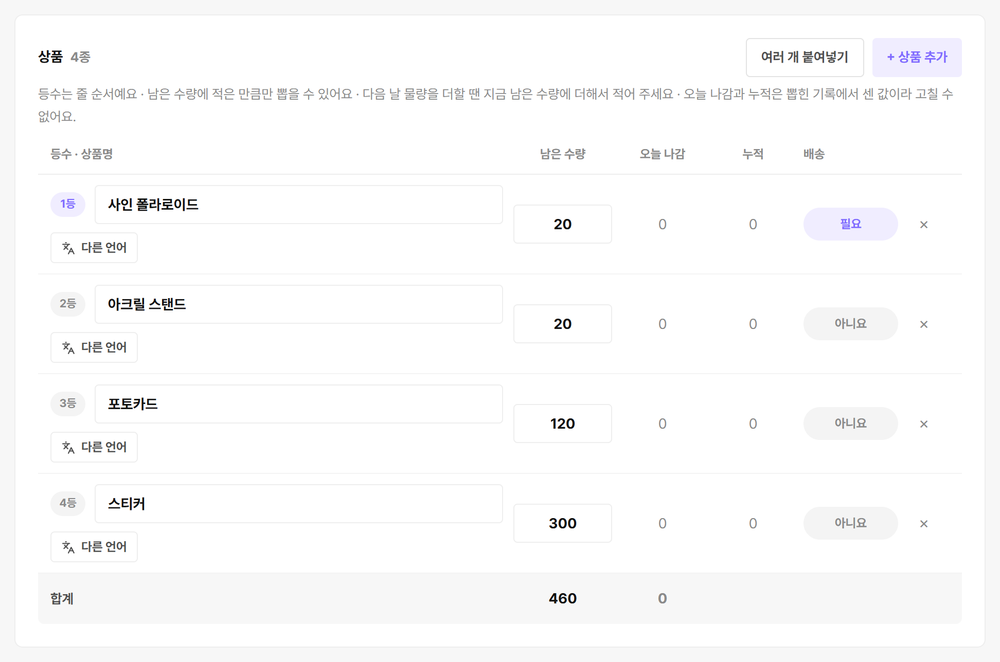
1 2 3 4이 칸은 더하는 칸이 아니라 지금 값을 그대로 정하는 칸입니다. 그래서 이튿날에는 어제 남은 수량 + 오늘 가져오신 개수를 주최자님이 계산해 적으셔야 합니다.
예를 들어 화면에 남은 수량이 12 로 보이고 오늘 30개를 더 가져오셨다면, 그 칸에 42 라고 적으시면 됩니다.
주최자님이 42 를 적는 사이에 부스에서 누가 뽑으면, 그 나간 개수가 주최자님이 적은 숫자에 덮여 사라집니다.
수량 편집은 ‘행사 마감’ 이나 ‘설정 잠금’ 을 켜서 뽑기가 멈춘 상태에서 하시고, 다 끝난 뒤 다시 여세요. 어차피 전날 밤에 하시는 작업입니다.
아래 등수가 하나씩 당겨지며 다시 매겨집니다. 이미 뽑힌 기록은 그대로 남습니다 — 오늘 나간 개수가 사라지지는 않습니다.
그 상품은 나오지 않습니다. 목록에서 지우지 않고 잠시 빼 두고 싶으실 때 쓰시면 됩니다. 모든 상품의 수량이 0이 되면 부스 화면은 마감 화면으로 바뀝니다.
그보다 많이 필요하시면 말씀해 주세요.
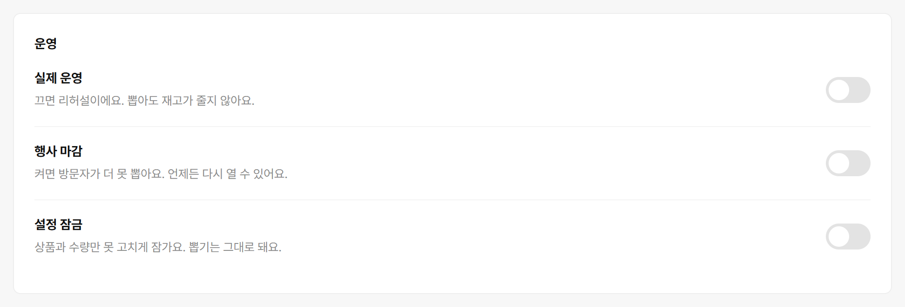
| 실제 운영 |
처음에는 꺼져 있습니다(리허설). 꺼져 있는 동안에는 아무리 뽑아도 재고가 줄지 않고
기록에도 남지 않습니다. 행사 시작 전에 반드시 켜고 저장해 주세요. 전날 시연하다 한정 상품을 태워 버리는 사고가 더 비싸서 이렇게 해 두었습니다. |
|---|---|
| 행사 마감 | 켜면 방문자가 더 못 뽑습니다. 언제든 다시 열 수 있습니다. |
| 설정 잠금 | 상품과 수량만 못 고치게 잠급니다. 뽑기는 그대로 됩니다. 스태프가 실수로 수량을 건드리는 것을 막고 싶으실 때 쓰세요. |
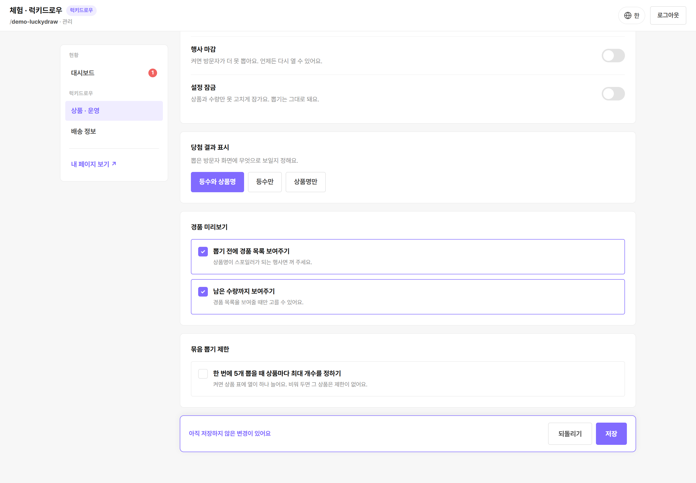
상품 표든 운영 스위치든, 바꾸신 뒤 화면 맨 아래 ‘저장’ 을 누르셔야 실제로 적용됩니다. 안 누르시면 그 줄에 “아직 저장하지 않은 변경이 있어요” 라고 떠 있습니다.
수량 여러 칸을 고치는 도중에 값이 하나씩 나가지 않도록 그렇게 만들었습니다. ‘실제 운영’ 을 켜고 저장을 안 하면 하루 종일 리허설로 돕니다. 잘못 만지셨으면 ‘되돌리기’ 로 저장 전 상태로 돌아갑니다.
‘실제 운영’ 과 ‘행사 마감’ 은 누르는 그 자리에서 한 번 더 물어봅니다. 되돌리기 어려운 전환이라 확인 창을 띄웁니다 — 확인을 누르신 뒤에도 저장은 따로 눌러 주세요.
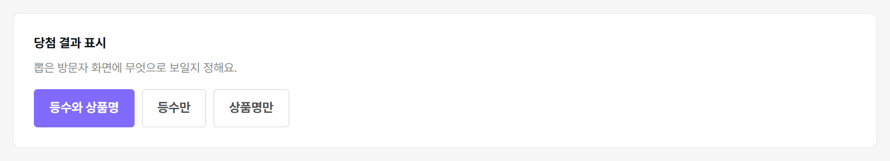
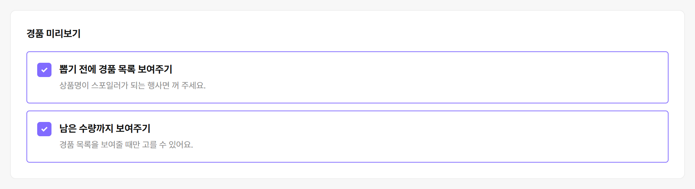
이 설정도 같은 화면이라 저장을 눌러야 방문자 화면에 반영됩니다.
외국에서 오시는 방문자를 받는 이벤트라면 화면 오른쪽 위 지구본으로 언어를 바꿀 수 있습니다. 한국어 · English · 中文 · 日本語 중에서, 이 이벤트에 켜 둔 언어만 목록에 나옵니다.
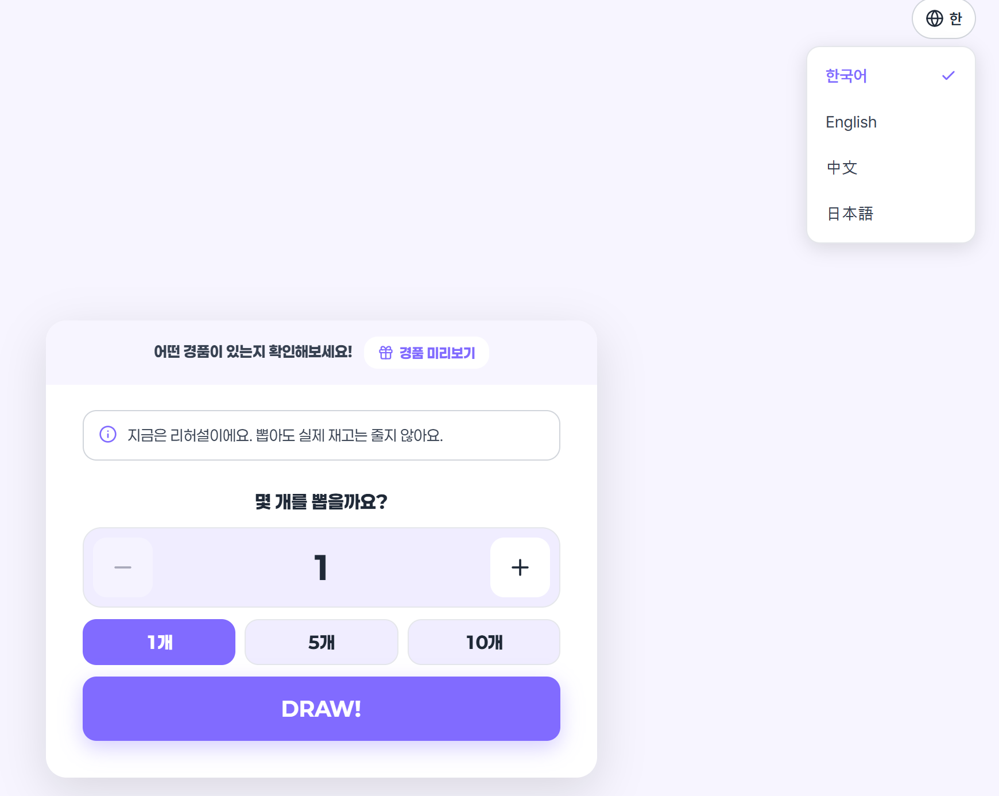
관리 화면에는 언어를 켜고 끄는 곳이 없습니다. 필요하신 언어를 말씀해 주시면 켜 드리고, 그때부터 지구본이 나타납니다. 아무 언어도 켜지 않은 이벤트에는 지구본 자체가 없습니다.
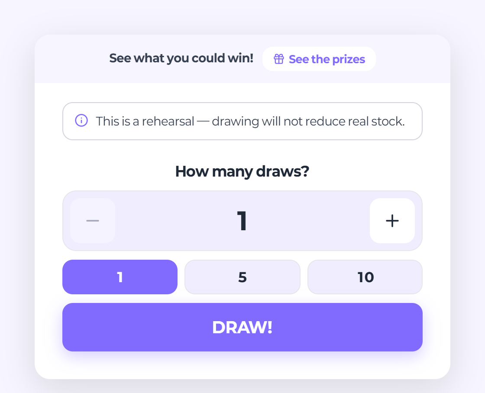
‘몇 개를 뽑을까요?’, ‘전체 결과’, ‘배송 정보 입력’ 처럼 화면에 원래 있는 문구는 저희가 번역해 두었습니다. 언어를 바꾸면 그대로 따라 바뀝니다.
하지만 주최자님이 적으신 상품 이름은 저절로 번역되지 않습니다. 저희가 무슨 상품인지 알 수 없기 때문입니다. 아래처럼 직접 적어 주셔야 합니다.
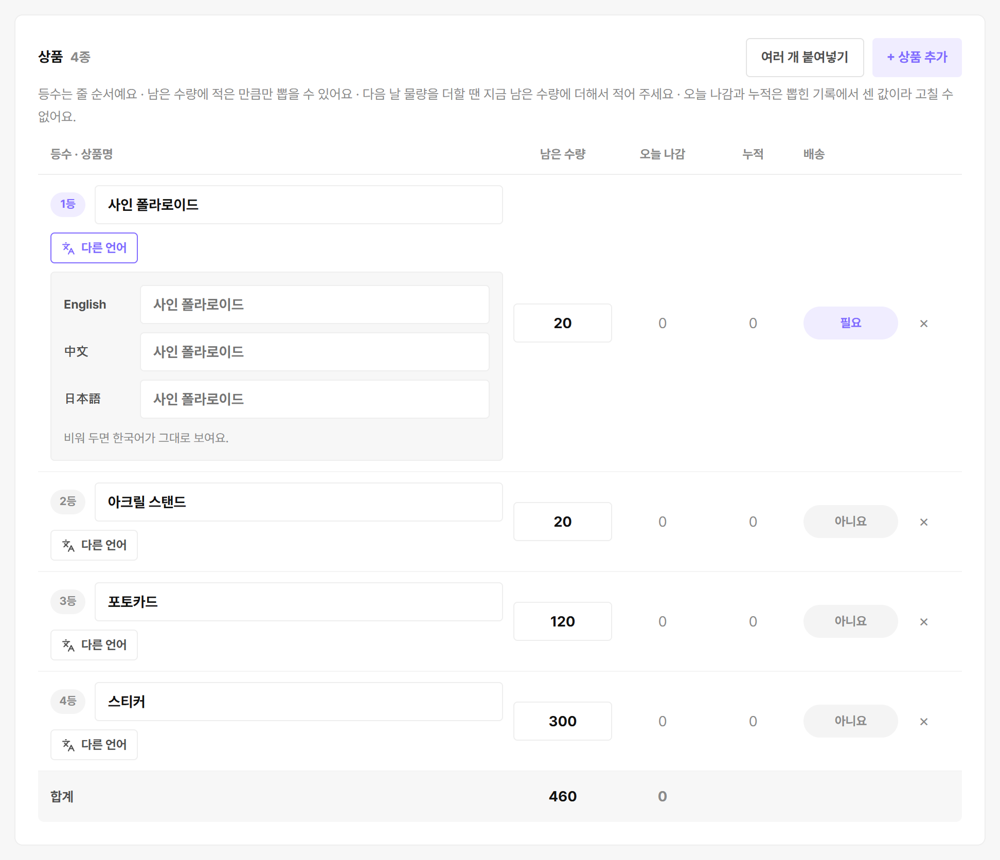
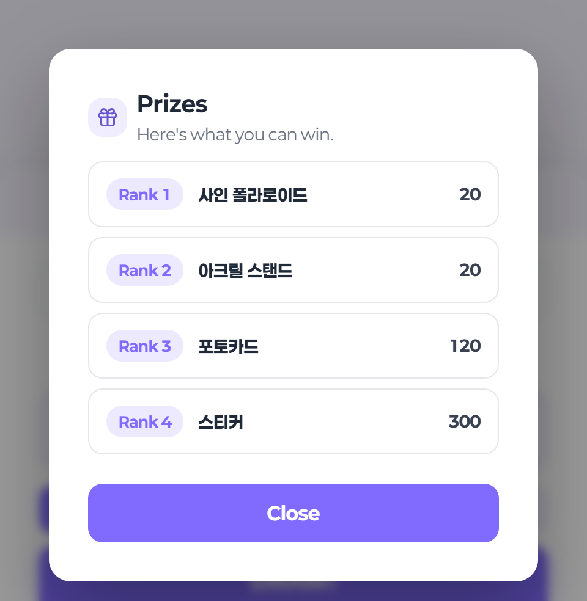
상품 표와 같은 화면이라 저장을 눌러야 반영됩니다. 한 번 적어 두시면 경품 목록·당첨 결과·전체 결과·배송지 입력 화면에 모두 같은 이름으로 나옵니다.
화면 문구 중에 번역이 안 되고 한국어로 남아 있는 곳을 보시면 알려 주세요 — 채워 넣겠습니다. 방문자가 넣는 배송 주소는 번역 대상이 아닙니다(적으신 그대로 저장됩니다).
기본은 꺼져 있습니다. 켜지 않으셔도 아무 문제 없습니다. 10개를 한 번에 뽑을 때 흔한 상품이 우르르 쏟아지는 것이 신경 쓰이실 때만 쓰시는 기능입니다.
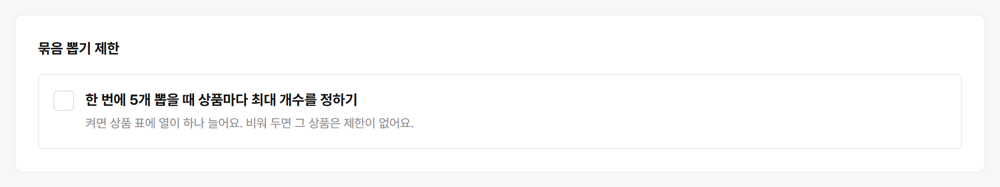
상품 표에 ‘5개당 최대’ 열이 하나 생깁니다. 거기에 숫자를 적으시면 한 묶음 안에서 그 상품이 그 개수를 넘지 않습니다. 비워 두신 상품은 제한이 없습니다.
| 5개당 최대에 3 | 5개 뽑기 → 최대 3개 · 10개 뽑기 → 최대 5개 |
|---|---|
| 비워 둠 | 제한 없음 (지금과 똑같이 나옵니다) |
흔한 상품이 덜 나오는 만큼 비싼 상품이 이론보다 빨리 소진됩니다. 방문자 체감은 좋아지지만 행사 막바지에 낮은 등수만 남는 현상이 심해집니다. 고장이 아니라 이 기능의 본질적인 대가입니다.
또한 제한은 한 번에 누른 묶음 안에서만 작동합니다. 10개를 5개씩 두 번에 나눠 누르면 우회됩니다 — 누르는 사람이 스태프라 현장에서 지키시면 됩니다.
행사 막바지에 남은 상품이 부족해지면 제한을 잠시 풀고 채웁니다. “10개 뽑기를 눌렀는데 오류” 가 나는 것보다 낫기 때문입니다.
방문자의 이름·연락처·주소가 그대로 들어 있는 유일한 화면입니다. 다른 어떤 화면보다 조심해서 다뤄 주세요.
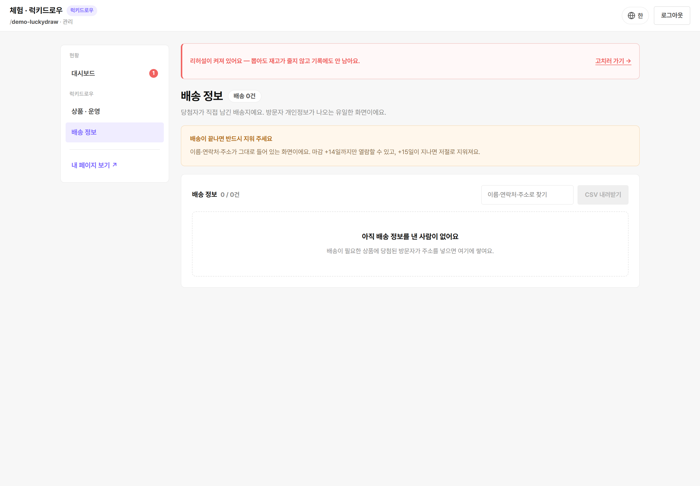
이 목록에는 다른 곳에 사본이 없습니다. 방문자 본인도 자기가 넣은 내용을 다시 볼 수 없습니다. 지우시면 되돌릴 방법이 없습니다.
순서는 언제나 ① CSV 내려받기 → ② 배송 완료 → ③ 전체 지우기 입니다.
주최자님 계정과 저희(플랫폼 운영자)만 볼 수 있습니다. 방문자는 자기가 넣은 내용조차 다시 못 봅니다 — 읽기를 열어 두면 그 이벤트 당첨자 전원의 개인정보가 새기 때문입니다.
행사 기간이 끝난 뒤 14일까지는 관리 화면에 들어와 배송 정보를 꺼내실 수 있습니다. 추첨은 이때 되지 않습니다.
15일째가 되면 이 이벤트의 자료가 자동으로 모두 삭제됩니다. 배송 정보도 함께 사라지니 그 전에 꼭 내려받아 주세요. 정확한 날짜는 전달드린 안내 메시지에 적혀 있습니다.
대시보드 오른쪽 아래 ‘행사 자료 내보내기’ 를 쓰시면 배송 정보를 포함한 행사 자료를 CSV 여러 개로 한 번에 받으실 수 있습니다. 개인정보가 든 파일이 섞여 있으니 받으신 뒤 보관에 유의해 주세요.
전날 준비(2장)를 마치셨다면 당일 아침에 하실 일은 네 가지뿐입니다.
부스 기기에서 추첨 화면을 새로고침해 보세요. 리허설 안내 줄이 안 보이면 정상입니다. 관리 화면 위쪽 빨간 줄도 사라져 있어야 합니다.
| 뽑기 버튼이 눌리지 않아요 | 그 기기가 로그인이 안 된 상태입니다. 화면 맨 아래 ‘관리자로 로그인’ 으로 로그인해 주세요. |
|---|---|
| 뽑았는데 재고가 안 줄어요 | ‘실제 운영’ 이 꺼져 있습니다. 켜고 저장해 주세요. |
| 수량을 고쳤는데 그대로예요 | 맨 아래 ‘저장’ 을 안 누르셨습니다. |
| 수량을 못 고치겠어요 | ‘설정 잠금’ 이 켜져 있습니다. 끄고 저장한 뒤 고쳐 주세요. |
| 방문자 화면이 마감으로 떠요 | ‘행사 마감’ 이 켜져 있거나 모든 상품의 남은 수량이 0입니다. |
아래는 관리 화면에 없는 항목입니다. 주최자님이 잘못 만지실까 걱정하실 필요가 없도록 처음부터 저희가 맡아 두었습니다. 바꾸고 싶으신 게 있으면 편하게 연락 주세요.
| 색 · 배경 · 로고 · 글씨체 | 이벤트 분위기에 맞춰 저희가 미리 맞춰 두었습니다. |
|---|---|
| 덮여 있다가 긁는 등수 | 몇 등까지 긁게 할지, 덮개에 어떤 문양을 넣을지 정해 드립니다. |
| 뽑기 버튼 문구 · 마감 문구 | “DRAW!” 대신 원하시는 문구로 바꿔 드립니다. |
| 상품이 100종을 넘을 때 | 말씀해 주시면 조정해 드립니다. |
| 행사 기간 연장 | 기간이 지나면 주소가 닫힙니다. 연장이 필요하시면 미리 말씀해 주세요. |
이 세 가지만 지키시면 나머지는 크게 어긋날 일이 없습니다. 궁금한 점은 언제든 편하게 연락 주세요.